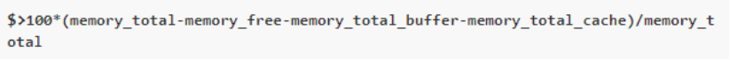

Aquí podemos agregar una nueva categoría para monitorizar el hardware. Las categorías utilizan tecnologías como SNMP, Redfish o IPMI para proporcionar información sobre el sistema y su funcionamiento.
Para agregar una nueva categoría de monitor debemos usar el botón superior derecho. Luego rellenaremos los campos seleccionando la tecnología correcta que permita a Redborder recibir los datos.
Para explicar la operación de la función snmp usaremos un ejemplo, monitorear el uso de memoria. Cuando creamos una nueva categoría de monitor con el botón Nueva categoría de monitor de la página Categorías de monitor, veremos la siguiente ventana emergente.
Esta es la fórmula para calcular el uso de memoria de un dispositivo.:

El resultado es una combinación de diferentes valores snmp. Ahora, si queremos crear un monitor como el de este ejemplo, debemos elegir Operación SNMP en el menú desplegable de tecnología. Ahora nuestro formulario cambiará a lo siguiente:
Debajo del campo OID, ahora hay un botón llamado Añadir nueva variable, que agrega otro campo para que podamos ingresar más OID snmp. Además, en la parte inferior, hay un campo Operación de OID, en el que presentaremos la operación que queremos hacer con los OID ingresados previamente.
Para cada OID, la salida se almacenará en una variable que luego usaremos en la operación de OID.
Una vez en este punto, solo tenemos que crear el monitor presionando el botón Crear.
Para agregar el nuevo monitor a un dispositivo sensor, crearemos un nuevo sensor en la pestaña Sensor, seleccionando Monitor Device.